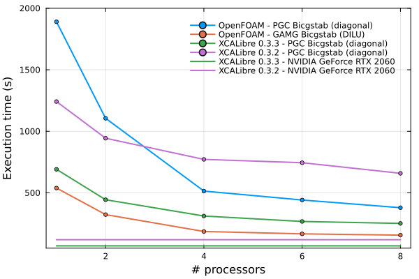
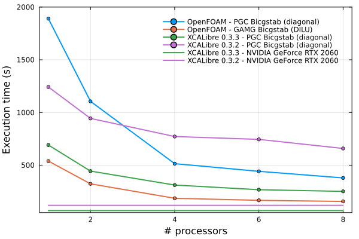

Benchmarks
Exploring the performance of XCALibre.jl
Version comparison and OpenFOAM
Context
Results
 

Exploring the performance of XCALibre.jl

Settings
This document was generated with Documenter.jl version 1.8.0 on Monday 2 December 2024. Using Julia version 1.10.7.